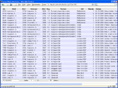
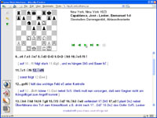
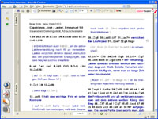
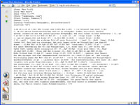
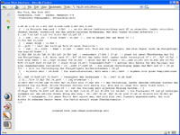

jose Web Servlet
The jose Web Servlet can be used to present chess databases on a web site.
Users can access the database from anywhere in the internet, all they need is their web browser.
Games can be replayed on the screen, or printed with high-quality layout (PDF).
See the live demo and a few screen shots:
|  |
browse and search the list of games |
|  |
view and replay a game in your browser
sample HTML page
|
|  |
view the game as PDF, suitable for printing
sample PDF file
(requires Acrobat Reader) |
|  |
view a game as PGN, suitable for copying into many chess programs |
|  |
view a game as plain text |
Server Requirements
- A Web Server.
- A Java Servlet engine.
Jose comes with configuration files for Tomcat and resin but most other engines should work as well.
If you need assistance in setting up the web application,
please contact me (at GitHub)
- A MySQL database for storing games. By default, jose uses its own ("embedded") database engine.
But you can also use a standalone MySQL server (e.g. run by your web provider).
Client Requirements
- Any commnonly available web browser will do: MS Explorer, Mozilla Firefox, etc.
JavaScript needs to be enabled.
- PDF files can be viewed with Acrobat Reader, available from Adobe.
- No additional software (plugin, applet, etc.) is required.
Update 2025:
although the above text is almost twenty years old, it is surprisingly up-to-date.
As you can see, nobody was talking about "Apps", and the "Cloud", in those days.
Nowadays, one expects to have a docker container to deploy all that stuff easily.
See instructions in the wiki.
{kind=link}
{kind=link}
{kind=link}
{kind=link}
{kind=link}